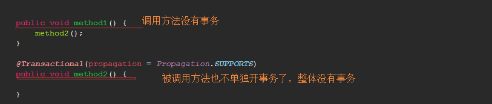

REQUIRED（@Transactional注解的默认传播特性），如果调用方法的事务存在，则加入到调用方法的事务中，如果调用方法不存在事务，则开启一个事务范围是本业务方法的事务
NEVER，业务方法必须在非事务环境中执行，如果在事务环境中执行的话会报错
MANDATORY，业务方法必须在事务环境中执行，如果在非事务环境中执行的话会报错
SUPPORTS，如果调用方法的事务存在，则被调用方法加入到调用方法的事务中去，不会单独开事务；如果调用方法的事务不存在，被调用方法也不会单独开事务

NOT_SUPPORTED，如果调用方法的事务存在，当调用被调用方法的时候，调用方法的事务会被挂起，等被调用方法执行完毕后再唤醒调用方法的事务；如果调用方法不存在事务，则被调用方法也不开事务